global_native_range--raw_1Vpp--maxTIS
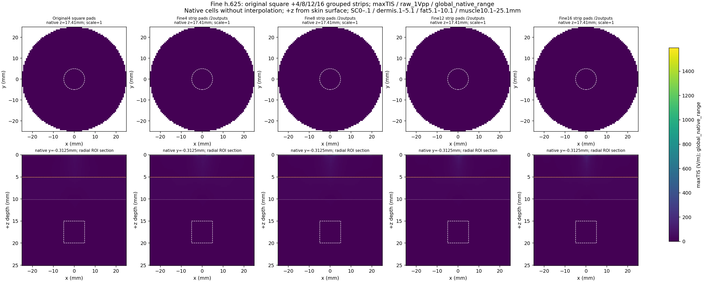
원래 4square 기준 + 별도 4strip 기하 대조군 + 8·12·16strip. 모든 조건은 독립 출력 2개, common GND, 50Ω. 동일 D50 팬텀, XY 0.625 mm, SC 2셀. 상면 z=0에서 +z가 깊이입니다. 점선 ROI는 중앙 r≤5 mm, 깊이 15–20 mm입니다. 5.1–10.1 mm의 지방층 경계 밝기는 깊이 집중의 증거가 아닙니다.
raw는 각 출력 1 Vpp이며 skin_contact_only는 원래 4square의 8개 피부·접촉 부담 한도로 맞춘 결과입니다. 이 한도는 수치 비교 기준입니다. maxTIS는 기본 두 carrier의 2074개 표본 방향 최댓값으로 연속 방향 최댓값의 하한입니다. fixedTIS는 수평 대각 방향, RMS는 3차 성분을 포함한 전체 carrier 전기장 RMS입니다. 생리적 활성화·안전·전체 격자 수렴을 뜻하지 않습니다. deep_ROI_display_clipped는 깊은 ROI 범위로 색상을 맞춰 그 이상을 포화 표시합니다.

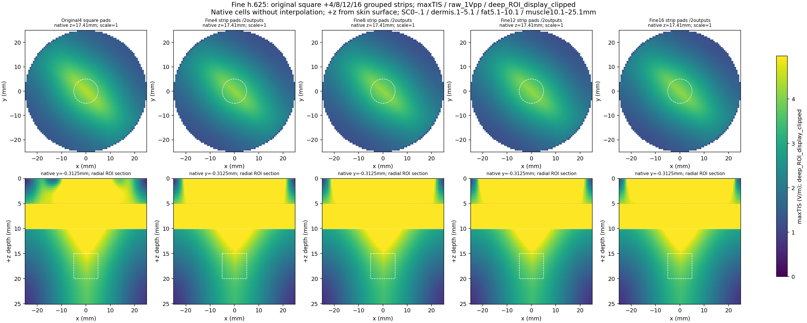
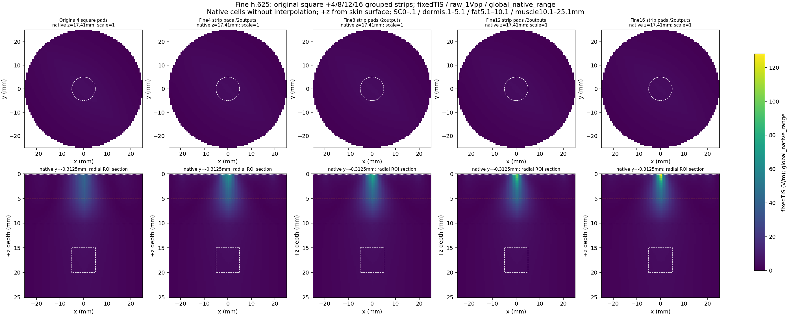
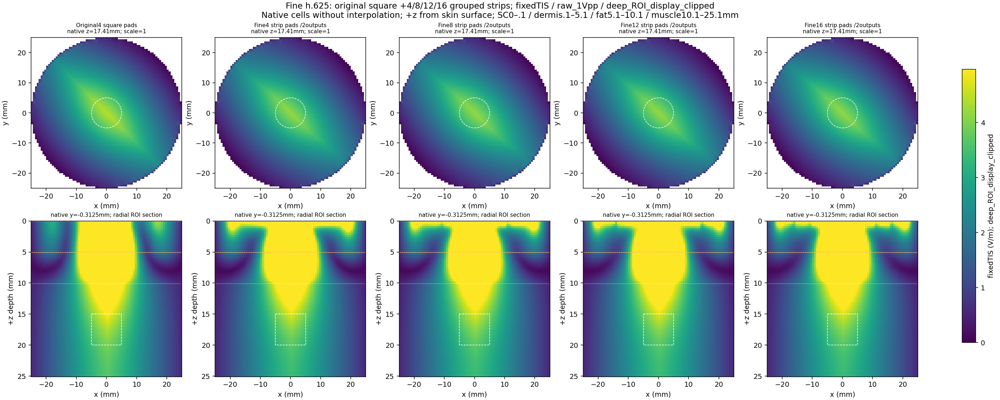
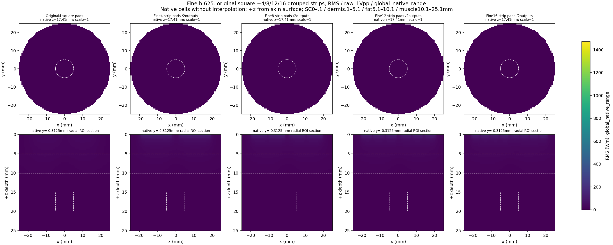
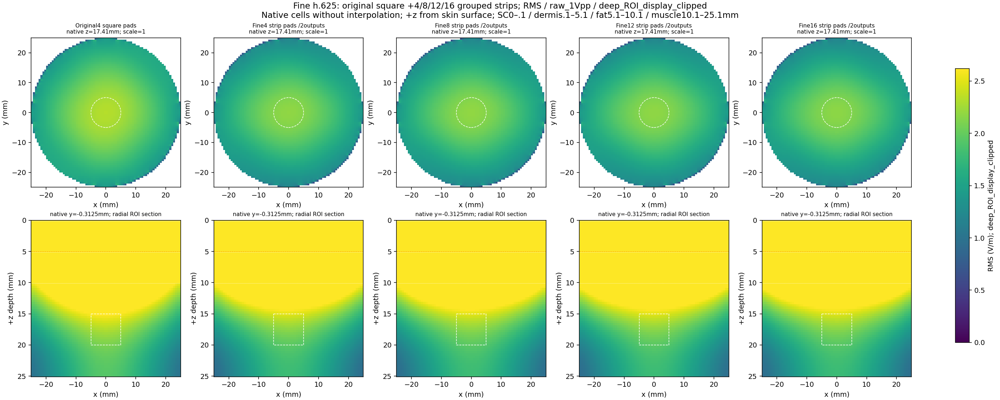
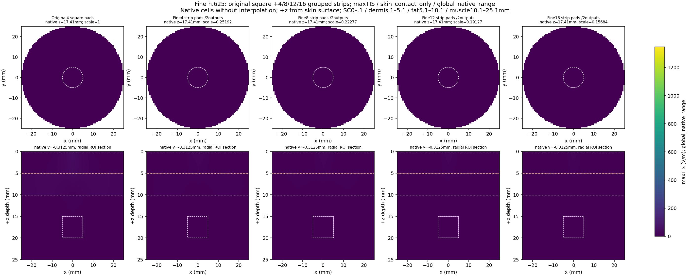
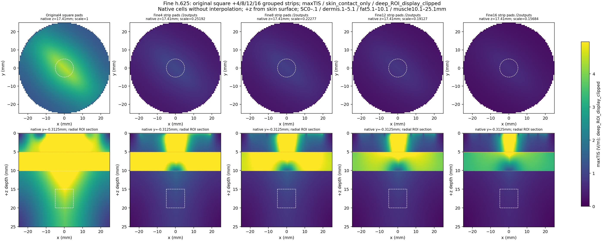
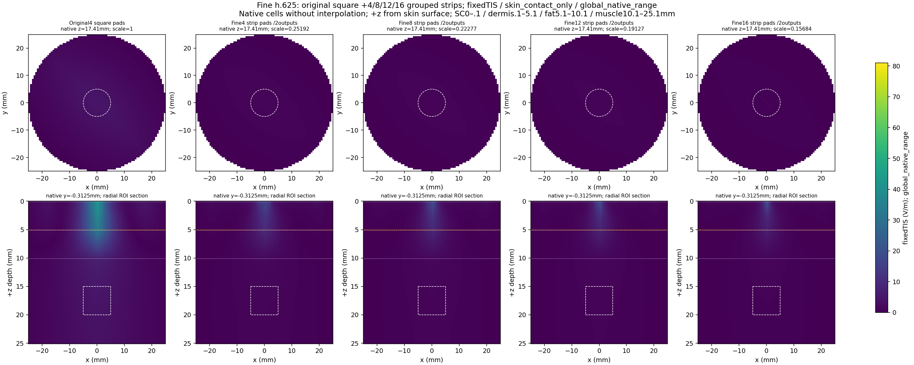
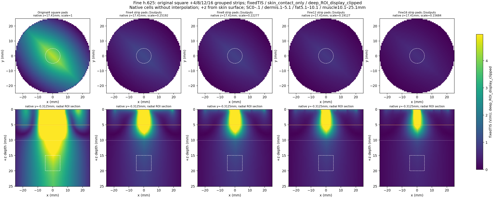
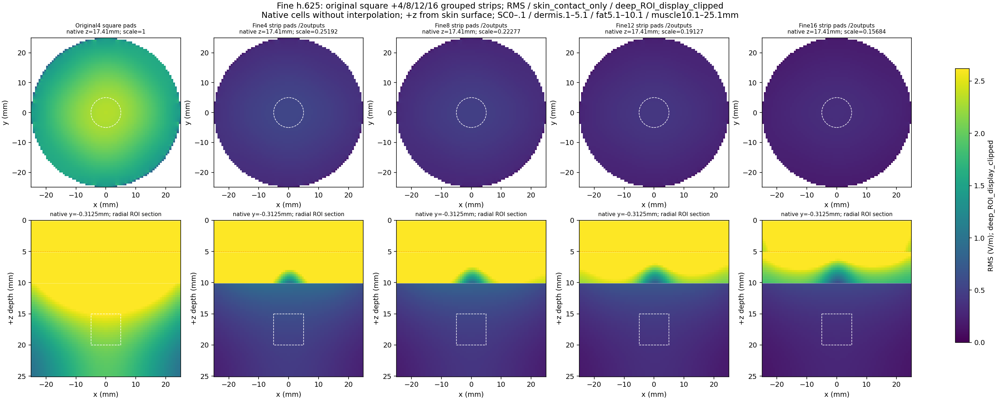